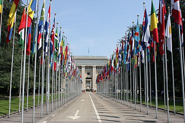
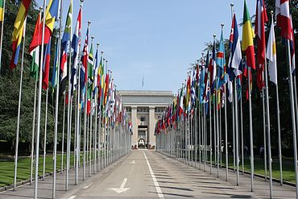

Pendidikan Berkualitas
Pendidikan berkualitas termasuk Tujuan Pembangunan Berkelanjutan yang ke 4. Menjamin
kualitas pendidikan yang merata dan inklusif serta meningkatkan kesempatan belajar untuk semua orang hingga
tahun 2030. Untuk mencapai tujuan tersebut pada tahun 2030, ada 10 target yang harus dilaksanakan.
Target Indonesia antara lain:
- Pendidikan dasar dan menengah gratis : Pada tahun 2030, menjamin bahwa semua anak perempuan dan
laki-laki menyelesaikan pendidikan dasar dan menengah tanpa dipungut biaya, setara, dan berkualitas,
yang mengarah pada capaian pembelajaran yang relevan dan efektif.
- Akses yang sama terhadap pendidikan anak usia dini yang berkualitas : Pada tahun 2030, menjamin
bahwa semua anak perempuan dan laki-laki memiliki akses terhadap perkembangan dan pengasuhan anak
usia dini, pengasuhan, pendidikan pra-sekolah dasar yang berkualitas, sehingga mereka siap untuk
menempuh pendidikan dasar.
- Akses yang sama ke pendidikan teknis, kejuruan, dan pendidikan tinggi : Pada tahun 2030, menjamin
akses yang sama bagi semua perempuan dan lakilaki, terhadap pendidikan teknik, kejuruan dan
pendidikan tinggi, termasuk universitas, yang terjangkau dan berkualitas
- Hilangkan semua diskriminasi dalam pendidikan : Menghilangkan kesenjangan antara laki-laki dan
perempuan dalam pendidikan, serta memastikan semua orang, termasuk penyandang disabilitas,
masyarakat adat, dan anak-anak yang hidup dalam kondisi sulit, memiliki kesempatan yang sama untuk
mendapatkan pendidikan di semua tingkatan, termasuk pelatihan kejuruan.
- Pendidikan untuk pembangunan berkelanjutan dan kewarganegaraan global : Tahun 2030, memastikan
semua siswa mendapatkan pengetahuan dan keterampilan yang dibutuhkan untuk mendukung pembangunan
berkelanjutan. Hal ini termasuk pendidikan tentang cara hidup yang ramah lingkungan, hak asasi
manusia, kesetaraan gender, budaya damai tanpa kekerasan, menjadi warga dunia yang baik, serta
menghargai keberagaman budaya dan peran budaya dalam pembangunan yang berkelanjutan.
- Memperluas beasiswa pendidikan tinggi untuk negara-negara berkembang : Pada tahun 2020, jumlah
beasiswa untuk negara berkembang secara global diperluas secara signifikan. Beasiswa ini ditujukan
terutama untuk negara-negara yang kurang mampu. Beasiswa ini membantu siswa mendaftar ke pendidikan
yang lebih tinggi, termasuk pelatihan kejuruan, teknologi informasi,
teknik, dan ilmu pengetahuan, baik di negara maju maupun negara berkembang lainnya.


 
